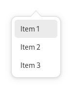
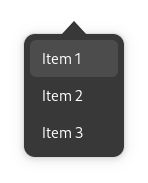

Menus¶
 Menus are a common design pattern. In GNOME they typically appear as primary, secondary and context menus.
General Guidelines¶
The following guidelines apply to all menus.
Menu Items¶
Label menu items with verbs for commands and adjectives for settings, using header capitalization.
Menu items can include checkboxes and radio buttons.
Two linked actions can be combined into a single menu item, by changing the label when the item is selected. For example, a Play item may change to Pause. However, only use this type of item when actions are logical opposites which are obvious to users. Likewise, do not use this technique for settings — use check boxes or radio buttons instead.
Provide an access key for every menu item. You may use the same access key on different menus in your app, but avoid duplicating access keys on the same menu.
Menu Size & Structure¶
Menus should contain between three and twelve items, and submenus should contain between three and six items.
Order items logically, either by importance, task order, or expected frequency of use. Items at the top and bottom of the menu are more noticeable and easily targeted, so reserve these locations for particularly important or interesting functionality.
- Organize similar menu items into groups — this will make them easier to understand and quicker to use. When creating groups:
Place single-item groups at the top or bottom of the menu, or group them together with other single items.
Do not mix different types of menu item within each group — actions, check box and radio button items should be kept separate.
Don’t nest submenus, since nesting can be difficult to use ergonomically, as well as being hard to navigate.
Primary Menus¶
Most apps have primary menus, and they are the location for standard features which every app is expected to have.
The button for primary menus should use the
open-menu-symbolicicon.- Primary menus are typically placed at the end (in Western locales on the right) of the header bar. Although, there are two exceptions to this rule:
If the window incorporates hierarchical navigation, the primary menu should only be visible while on the top level view. (If other views require a menu, a secondary menu can be used.)
If the window has a sidebar, the primary menu should be placed above the sidebar list.
The menu button tooltip and accessibility label should refer to the menu as ‘Main Menu’.
Standard Primary Menu Items¶
The following are standard primary menu items, and should be placed in a group at the end of the menu:
Preferences |
Opens the app’s preferences dialog, if it has one. |
Keyboard Shortcuts |
Opens the app’s keyboard shortcuts window, if it has one. |
Help |
Opens the app’s user documentation in the Help app. |
About App |
Opens the app’s about dialog. This item should include the app’s name, such as About Photos or About Calculator. Every primary menu should include this item. |
Primary menus shouldn’t include menu items for Close or Quit: windows can already be closed using the close button in the header bar, and it isn’t always obvious what a close menu item refers to.
Secondary Menus¶
Secondary menus are located in the header bar, and are used to contain actions and settings for a particular view or content item (such as a document, contact, conversation or photo). This differentiates them from primary menus, whose menu items relate to the entire app.
Secondary menus:
are typically used in combination with hierarchical navigation and sidebars;
are optional and only need to be used if there are enough actions or options to require a menu;
generally shouldn’t reproduce menu items that are included in primary menus, like Preferences and About.